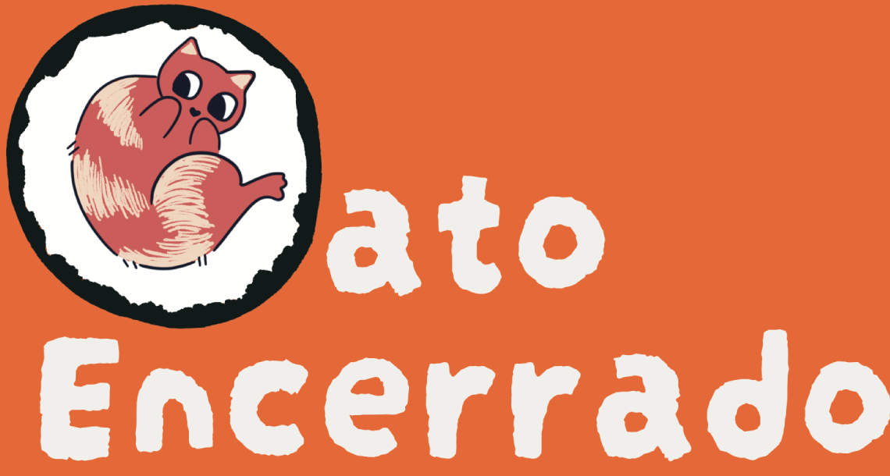
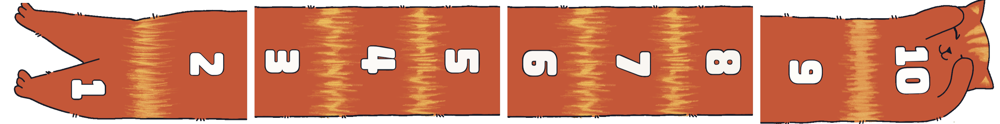
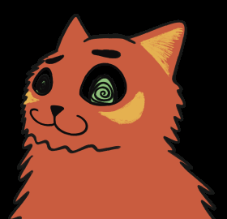

¡Lanza el dado, agudiza la vista y sé el más rápido en atrapar al gato!
Diseño: Danny Blue Jet · Ilustración: Buho Pintura · La Vaca del Tablero2 a 5 jugadores · 8+ · 15 min

Versión de prueba: las reglas pueden cambiar.
